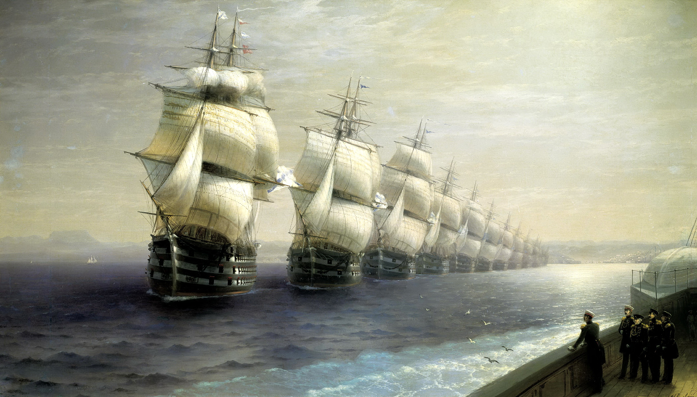

Богатыри - Виктор Васнецов
Описание картины "Богатыри - Виктор Васнецов":
Основная тема эпического полотна Виктора Васнецова – богатыри-воины, стоящие на защите рубежей родины. С 1871 года, когда был сделан первый карандашный эскиз картины, художник, по его словам, не переставал думать о произведении, считая его исполнение своим «творческим долгом, обязательством перед родным народом». В соответствии с основной темой он строит композицию картины, размещая на большом полотне три крупные фигуры фронтально, что создает впечатление силы и величественности. Персонажи приближены к переднему плану и благодаря точке зрения снизу воспринимаются стоящими на пьедестале. Остроконечные шлемы на головах будто подпирают небо. Плотные массы темно-зеленых холмов с густым темным лесом придвинуты к витязям. Композиция тем самым уплощается, стилистически приближаясь к настенной росписи. Пейзаж написан широкой кистью. Редкие вкрапления подробно выписанных нежных полевых цветов вносят в его могучее дыхание лирическую ноту. Плавные очертания холмов с густым темным лесом на заднем плане вторят силуэтам богатырей. Высокая трава и контуры маленьких елочек и сосенок на первом плане как бы останавливают бег крупных наплывающих планов. Таким образом, природа приобретает эпически монументальный характер. Благодаря композиционно-стилистическим приемам художник передал народное представление о героях былинного эпоса. В картине выражена, по словам Владимира Стасова, «вся сила и мощь русского народа <…> сила торжествующая, спокойная и важная».
Больше информации о картине...